Ульяновск
город, где хочется летать
Карта центра города

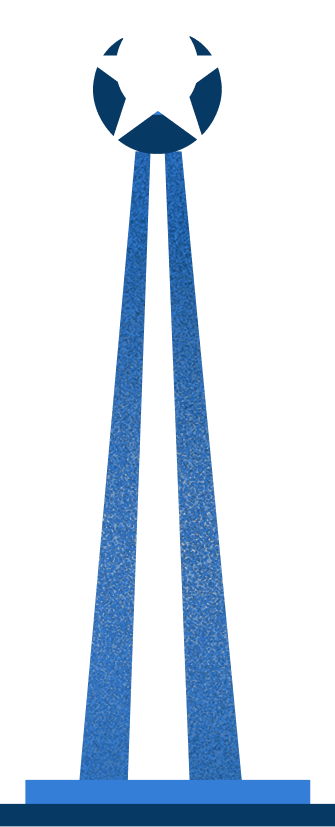
30 лет Великой ПобедыПлощадь с памятником штурмовику Ил-2, выпускавшемуся в Ульяновске в годы Великой Отечественной войны. Символ трудового и воинского подвига горожан.
 Музей
Музейбалалайки
Единственный в России музей балалайки, открытый в 2008 году. Коллекция из более 100 инструментов охватывает историю народного инструмента с XVII века до наших дней.
 Яхтинг
Яхтинг
Волжский яхт-клуб у подножия берегового склона — место городского досуга и водного спорта. Отсюда открывается живописный вид на Императорский мост.
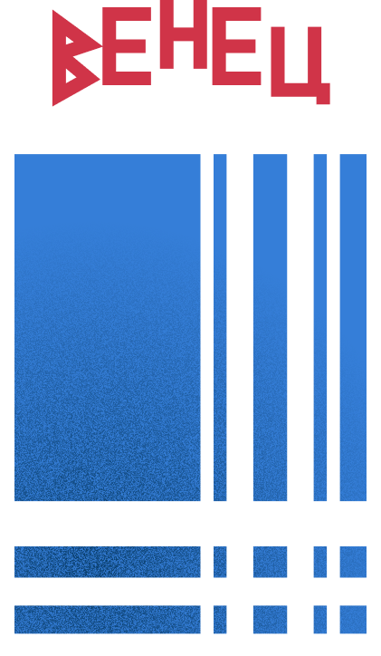
Гостинница «Венец»Высотная гостиница 1970 года постройки на берегу Волги. С видовой площадки открывается панорама реки и двух мостов — Президентского и Императорского.
Монументальный комплекс, открытый в 1970 году к 100-летию В.И. Ленина. Включает музей и дом-музей семьи Ульяновых — выдающийся образец советской монументальной архитектуры.
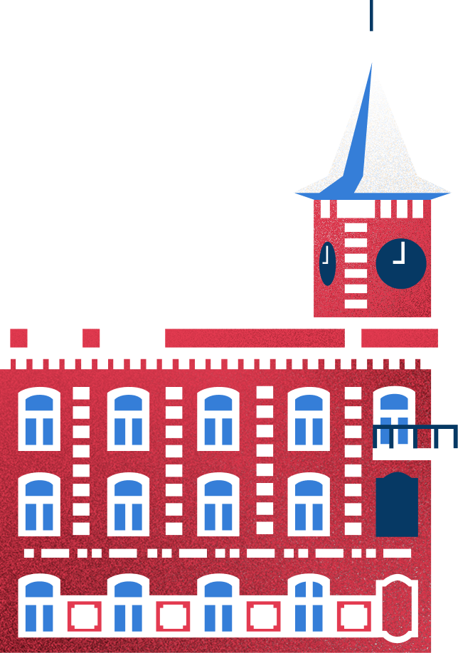
Музей И.А. ГончароваКаменное здание конца XVIII века, где родился писатель Иван Гончаров в 1812 году. С 1982 года здесь расположен его историко-мемориальный музей, объект культурного наследия федерального значения.
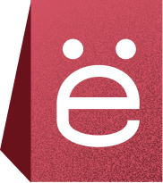
Памятник букве «Ё»Единственный в мире памятник букве алфавита, установленный в 2005 году. Буква «Ё» была введена в литературный оборот симбирским историком Николаем Карамзиным в 1797 году.
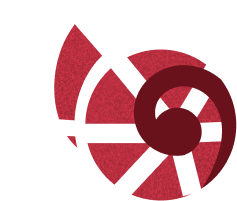
Симбирцитовая ЗалаЕдинственный в мире музей симбирцита — уникального природного минерала, добываемого только в Ульяновской области. В экспозиции — украшения, изделия и геологическая история Поволжья.
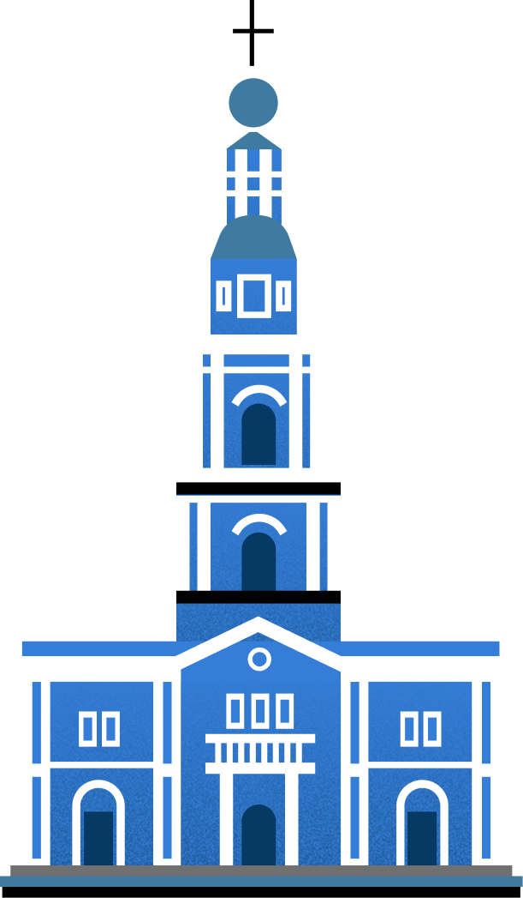
Спасско-Вознесенский соборКафедральный собор Ульяновской митрополии, возведённый в 1841 году в стиле позднего классицизма. После советского периода возвращён Церкви и полностью восстановлен.
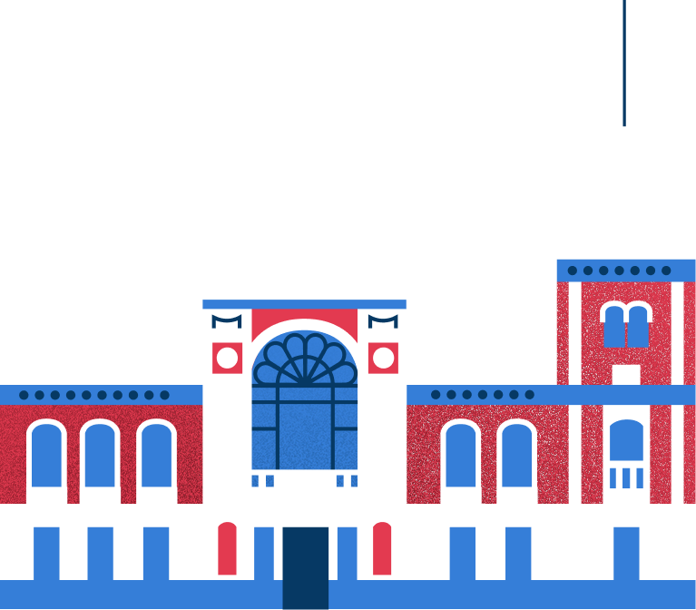
Художественный музейУльяновский областной художественный музей, основанный в 1895 году. Хранит более 12 000 произведений русского и западноевропейского искусства XVII–XX веков.
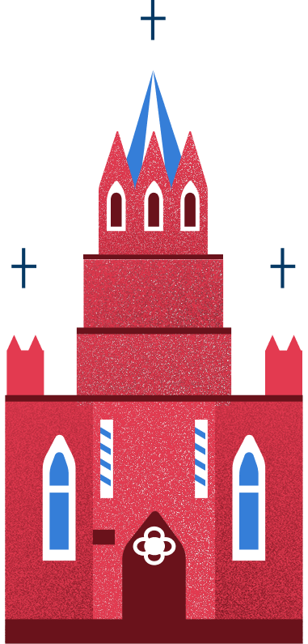
Церковь Св. МарииКатолический храм, построенный в 1894 году для польской и немецкой общин Симбирска. Один из немногих сохранившихся действующих католических приходов Поволжья.
Ульяновск — больше, чем кажется
 Основан в 1648 году
Площадь 316 км²
614 тыс. жителей
Город трудовой
Основан в 1648 году
Площадь 316 км²
614 тыс. жителей
Город трудовойдоблести
Ульяновск — это родина Ленина и город авиаторов, где история России чувствуется в каждом районе. Здесь переплетаются купеческий Симбирск с его старинными усадьбами и современный промышленный центр. Знаменитые мосты, авиационный музей под открытым небом, живописная набережная и особая волжская атмосфера делают Ульяновск уникальным местом, где прошлое встречается с настоящим.
Город трудовойдоблести
Сувениры
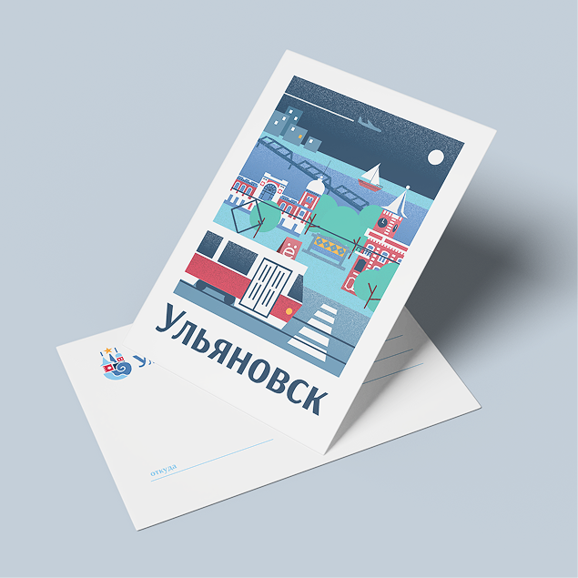
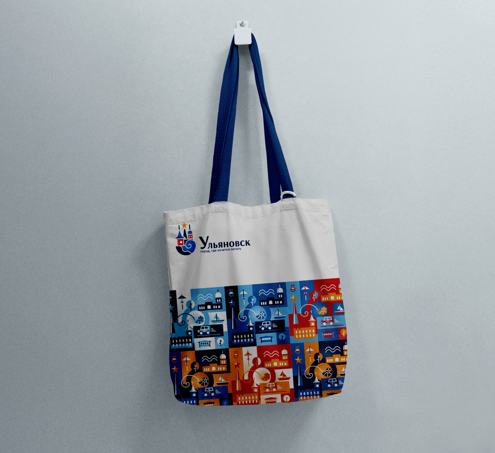
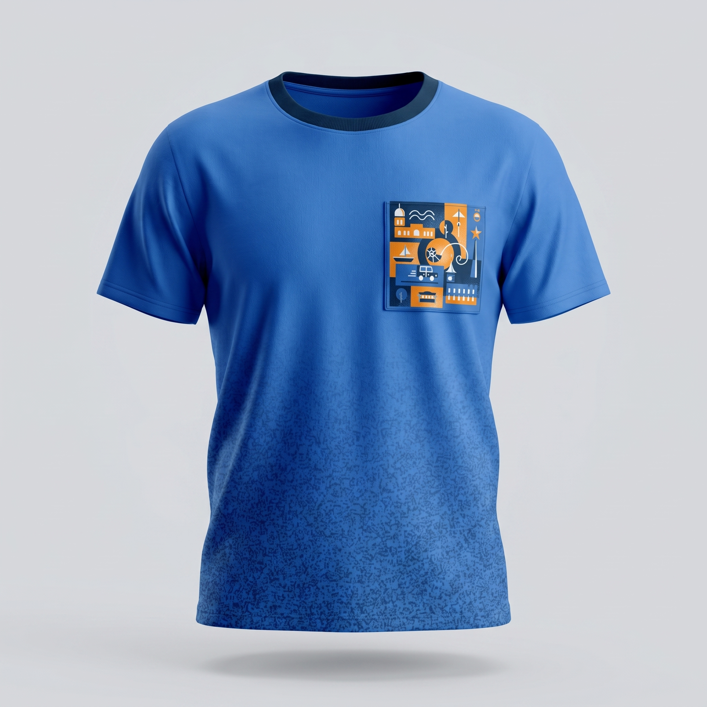
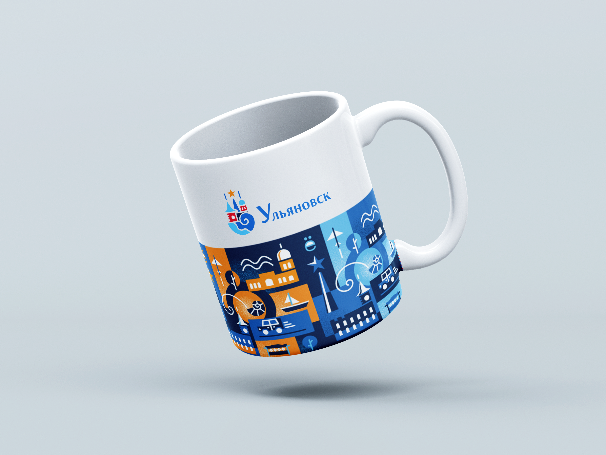